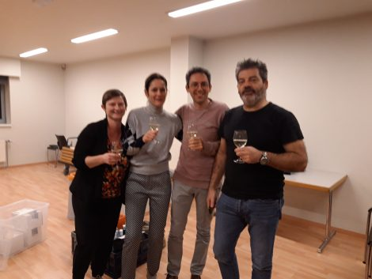

Wie zijn wij
De Zuid-Oost-Vlaamse kinekring is een VZW die zich richt tot alle kinesitherapeuten uit de regio Geraardsbergen,
Ninove, Herzele, Zottegem, Brakel, Lierde, Oosterzele en Sint-Lievens-Houtem.
Bestuur

vlnr:
- penningmeester Katleen Schrever
- voorzitter Katrien Eeman
- bestuurslid Marten
Muylaert
- secretaris Yves Verbustel
De rol van de kinekring
- De Zuid-Oost-Vlaamse kinekring heeft als doel de collegialiteit, samenwerking en professionaliteit van de
lokale
kinesitherapeuten te bevorderen.
- Wij promoten en vertegenwoordingen de kinesitherapie bij de lokale instanties en zorg- en welzijnspartners
(huisartsen, verpleegkundigen, andere zorgverstrekkers, OCMW’s,
welzijnsorganisaties en ziekenhuizen,
eerstelijnszones). Wij zijn betrokken bij de oprichting van de eerstelijnszone Panacea.
- ZOK informeert zijn leden over belangrijke nieuwsberichten omtrent de kinesitherapie. Zowel op lokaal als op
nationaal niveau.
- Enkele van onze bestuursleden zetelen in de algemene vergadering van Axxon en zorgen op die manier voor de
link
tussen de lokale kring en de nationale beroepsvereniging.
- Enkele keren per jaar organiseren wij een bijscholing en/of peer-review. Alle kinesitherapeuten (leden en
niet-leden) kunnen aan deze activiteiten deelnemen om zo voldoende navormingseenheden te vergaren om te
voldoen
aan de kwaliteitscriteria van Pro-Q-Kine.
- Wie lid wordt van ZOK ondersteunt de lokale kinesitherapie, en geniet van talrijke voordelen. Word nu lid!